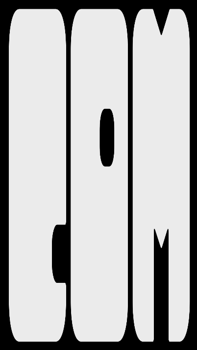

Zine Covers

These posters were created as cover designs for an Experimental Typography zine using Adobe Illustrator. The project gave me the opportunity to explore unconventional type treatments and visual composition to push the boundaries of traditional typography.

BLUEBIRD Sparkling Water

BLUEBIRD is a product design project for a conceptual sparkling water brand. After researching successful packaging designs in the industry, I used Adobe Illustrator to create a custom design and Adobe Dimension to visualize it on can and box mockups.
TEDxCU posters

Inspired by TEDxCU’s annual theme ('Anomaly') and branding guidelines, I designed a series of posters to subtly introduce the theme reveal over the official TEDxCU social media. Both posters were created using Adobe Illustrator.
Animated Poster Series

The GIF on the left is an advertisement for a new course at the University of Colorado highlighting the integration of programming and typography. On the right, I created an animated type poster featuring a typeface of my choice. Both were made using Adobe After Effects.
WHAAAT!? Festival Badges

The WHAAAT!? Festival highlights experimental games and playful interactions. Based on the 2025 theme (old TV Sitcom) and design resouces given, I designed badges for attendees. The back was stylized and left blank to later be populated with the schedule.